한줄 요약 — 서로 다른 출처의 RL expert·script·사람 시연을 공통 토큰 인터페이스로 모아 25M-parameter GPT 정책을 사전학습하고 소량 SFT·RLFT로 새 조건에 적응시켜, Menzi Muck M545에서 장애물 복구를 포함한 6회 완전자율 굴착 cycle을 평균 36초에 수행했다.
1.연구 배경 및 동기
단일 굴착 동작을 넘어 완전한 작업 cycle로
굴착 로봇 연구는 digging, dumping, arm repositioning, collision recovery를 각각 다른 제어기나 규칙으로 만드는 경우가 많다. 그러나 실제 cycle에서는 작업 사이를 부드럽게 전환하고 예기치 않은 매설 장애물에 반응해야 한다. 각 task마다 별도 observation과 action 표현을 쓰면 데이터를 공유하기 어렵고 새로운 작업을 추가할 때 전체 stack을 다시 설계해야 한다.
또 다른 병목은 데이터다. 토양 굴착 expert는 대규모 병렬 시뮬레이션 RL로 만들 수 있지만, 복구 동작은 실패 상황을 정확히 모델링하기 어려워 사람 시연이 더 효율적이다. 덤프와 빈 arm 이동은 정교한 RL보다 script가 충분하다. ExT는 서로 다른 방식으로 얻은 데이터를 한 sequence model에 합치면 task 간 공통 기구학과 유압 반응을 재사용할 수 있다는 가설을 검증한다.
Transformer는 긴 observation-action history와 task token을 조건으로 다음 행동을 예측한다. 사전학습 뒤 소량의 새 task demonstration으로 supervised fine-tuning하고, 지형·토양·버킷 변화에는 KL-regularized RL fine-tuning을 적용한다. 목표는 하나의 거대한 end-to-end 작업기가 아니라, 공통 정책 내부의 여러 skill을 finite-state supervisor가 안전하게 호출하는 완전 작업 workflow다.
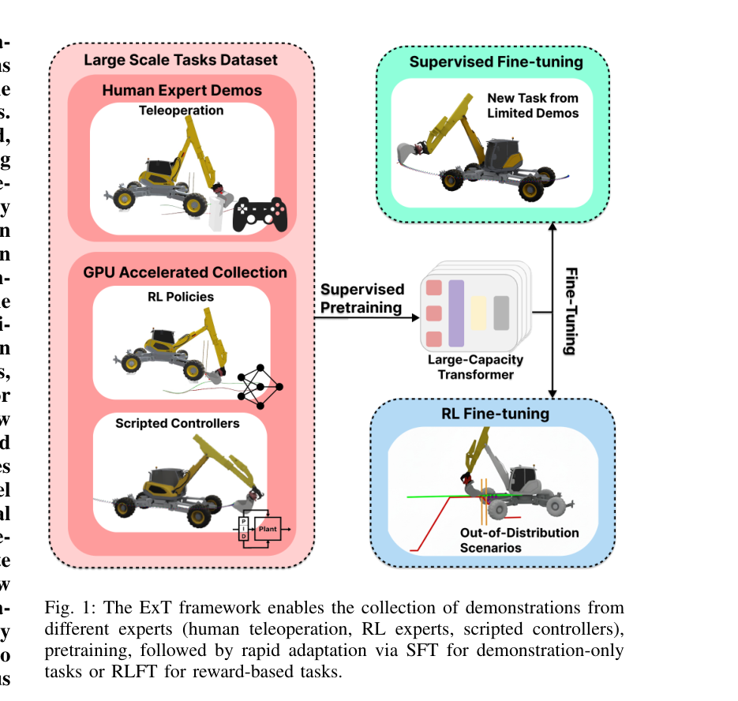
원문 Figure 1 · PDF p.1 — Fig. 1: The ExT framework enables the collection of demonstrations from different experts (human teleoperation, RL experts, scripted controllers), pretraining, followed by rapid adaptation via SFT for demonstration-only tasks or RLFT for reward-based tasks.
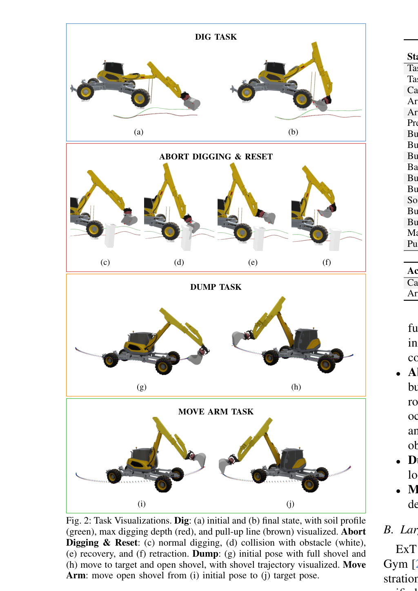
원문 Figure 2 · PDF p.3 — Fig. 2: Task Visualizations. Dig: (a) initial and (b) final state, with soil profile (green), max digging depth (red), and pull-up line (brown) visualized. Abort Digging & Reset: (c) normal digging, (d) collision with obstacle (white), (e) recovery, and (f) retraction. Dump: (g) initial pose with full shovel and (h) move to target and open shovel, with shovel trajectory visualized. Move Arm: move open shovel from (i) initial pose to (j) target pose.
선행 연구의 한계
task별 독립 정책은 데이터와 표현을 공유하지 못해 새로운 skill마다 대규모 학습을 반복한다.
순수 scripted pipeline은 토양과 장애물 변화에 대한 피드백 적응이 약하고 수동 전환 규칙이 늘어난다.
단일-task RL은 digging 성공률이 높아도 dump·reposition·abort를 연결한 실제 cycle을 보장하지 않는다.
새 환경에서 전체 모델을 재학습하면 기존 task 성능을 잊는 catastrophic forgetting이 발생할 수 있다.
이 연구의 기여
dig, abort/reset, dump, move-arm의 이질적 데이터를 공통 sequence로 결합하는 Excavator Transformer(ExT)를 제시한다.
모든 task는 관절 상태, 목표, 지형 관련 값과 과거 action을 공통 형식으로 token화하고 task identifier를 함께 넣는다. causal Transformer는 최근 25 step history에서 다음 연속 제어 명령을 회귀한다.
데이터는 task 특성에 맞게 수집된다. Dig는 RL expert의 성공 trajectory, dump와 move-arm은 script, abort/reset은 사람이 teleoperate한 시연이다. 먼저 behavior cloning으로 합치고, 새 task는 SFT, domain shift는 pretrained policy 주변을 유지하는 RLFT로 적응한다.
처리 파이프라인
1
이질적 expert 데이터 생성
Dig RL expert는 약 98% 성공률에 도달한 뒤 성공 trajectory 15만 개를 제공한다. Dump와 move-arm은 각 15만 개 scripted episode를 RTX 3090에서 2시간 이내 생성하고, abort/reset은 2,000개 사람 teleoperation trajectory를 약 3시간 수집한다.
2
공통 observation-action token화
현재 robot state와 task target을 선형 embedding하고 task token, 과거 action을 같은 sequence에 배치한다. context length 25의 causal mask로 미래 정보 누출 없이 다음 action을 예측한다.
3
다중작업 behavior cloning
6-layer, 6-head, hidden size 640의 약 25M parameter GPT policy를 L1 action imitation loss로 학습한다. task별 dataset을 섞되 task token으로 원하는 skill을 구분한다.
4
SFT와 KL-regularized RLFT
새 move-arm task는 1,000개 demonstration으로 supervised fine-tuning한다. terrain, soil, bucket OOD 변화는 1,000 parallel environment에서 6 step씩 100 iteration, 총 60만 interaction으로 RL fine-tuning하며 pretrained policy와의 KL 항을 둬 기존 task 망각을 억제한다.
5
유한상태 작업 조정
실기에서는 finite-state machine이 dig, dump, move, abort/reset task token을 전환한다. 매설 rock 때문에 arm이 stall하면 proprioception으로 이를 판정하고 abort와 recovery skill을 호출한 뒤 cycle로 복귀한다.
PPO의 clipped objective, value loss, entropy에 frozen pretrained policy π0와의 KL 벌점을 더하며, 원문은 c2=0.0005와 β=0.02를 사용한다.
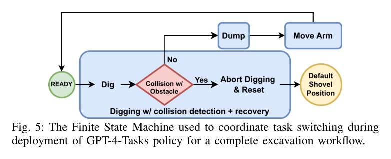
원문 Figure 5 · PDF p.7 — Fig. 5: The Finite State Machine used to coordinate task switching during deployment of GPT-4-Tasks policy for a complete excavation workflow.
3.핵심 기술
Task-conditioned causal Transformer
6-layer·6-head·hidden 640·context 25의 약 25M GPT 정책이 task token에 따라 digging부터 centimeter급 move까지 행동을 낸다.
Attention은 최근 state-action history에서 유압 지연과 작업 단계 정보를 선택하며, 5-layer LSTM보다 다중작업 정밀도와 perturbation 대응이 좋았다.
하나의 25M 정책에 4개 skill 통합
task token으로 행동 모드 조건화
25-step history로 지연과 진행 문맥 활용
데이터 출처를 task 난이도에 맞춘 혼합 학습
토양 상호작용이 복잡한 dig는 RL expert, 기하학적으로 명확한 dump·move는 script, 드문 abort/reset은 사람 teleoperation으로 만든다.
서로 다른 최적 데이터원을 공통 token 형식으로 합쳐 실제 시간과 시뮬레이션 비용을 필요한 곳에 집중한다.
RL·script·human demonstration 통합
성공 trajectory 중심 dig dataset
고비용 실제 시간을 시뮬레이션 병렬화로 대체
few-shot 적응과 망각 억제 RLFT
사전학습 representation은 새 move-arm task를 1,000개 시연으로 학습한다. OOD RLFT는 KL 항으로 pretrained policy 이탈을 제한해 기존 skill 망각을 줄인다.
1,000 demonstration SFT
60만 interaction RLFT
KL regularization으로 기존 skill 보존
Skill policy와 finite-state 안전 조정
하나의 network가 action을 내지만 task 전환은 검증 가능한 finite-state machine이 관리한다. 실기 stall에서는 abort/reset을 호출해 안전하게 후퇴하고 작업에 복귀한다.
task 전환 조건의 명시성
매설 장애물 stall 감지
abort 후 recovery와 작업 재개
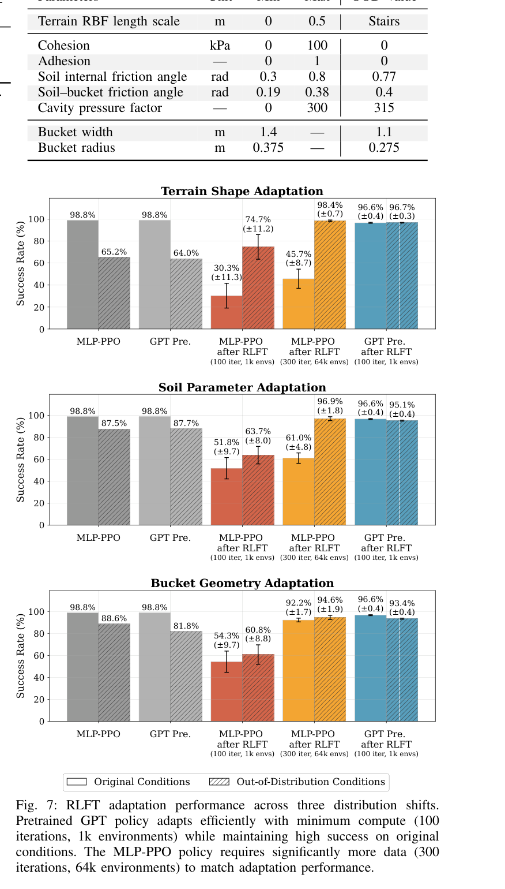
원문 Figure 7 · PDF p.7 — Fig. 7: RLFT adaptation performance across three distribution shifts. Pretrained GPT policy adapts efficiently with minimum compute (100 iterations, 1k environments) while maintaining high success on original conditions. The MLP-PPO policy requires significantly more data (300 iterations, 64k environments) to match adaptation performance.
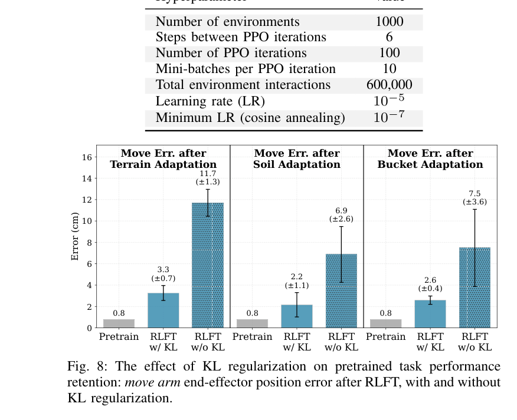
원문 Figure 8 · PDF p.8 — Fig. 8: The effect of KL regularization on pretrained task performance retention: move arm end-effector position error after RLFT, with and without KL regularization.
4.실험 결과
실험 환경·장비·데이터
시뮬레이션은 4개 task와 지연·joint velocity noise perturbation, terrain·soil·bucket OOD 변화를 포함한다. 제어 지연은 최대 0.75 s, 속도 noise 평균 진폭은 약 0.2 rad/s로 샘플링한다. GPT를 LSTM, MLP expert, task 구성별 모델과 비교한다.
실기 장비는 Menzi Muck M545 약 12 t급 굴착기다. FSM이 ExT task를 연결해 3개 dig point와 90° dump를 포함하는 완전 작업 cycle 6회를 수행하며, 별도 매설 rock 장면에서 collision abort/recovery를 시험한다.
실험 프로토콜
기본 multi-task 정책은 dig 15만, dump 15만, move 15만, abort/reset 2,000 trajectory로 behavior cloning한다. Dig RL expert 성공률은 98%이며 성공 trajectory만 dataset에 저장한다.
SFT는 pretrained dig+move 모델에 move-arm 시연 1,000개를 추가하고 scratch 1,000개 및 scratch full 15만 개와 비교한다. RLFT는 각 OOD에서 1,000 environment×6 step×100 iteration으로 60만 interaction을 사용하고 5개 random seed로 평가한다.
실기 6 cycle에서 bucket volume, cycle time, dig와 dump endpoint error를 측정한다. 각 task는 FSM 조건으로 전환되며 사람이 조종 중 개입하지 않는 zero-shot deployment다.
비교 기준
5-layer LSTM hidden 1,024: 비슷한 sequence 입력을 처리하는 recurrent behavior-cloning 비교군이다.
Task-specific MLP/PPO expert: 개별 task 대규모 RL 성능과 통합 GPT를 비교한다.
Scratch SFT 1,000 및 scratch full 150,000 demonstrations: pretraining transfer의 데이터 효율을 평가한다.
RLFT without KL: 새 OOD 적응 중 기존 move-arm skill 망각을 측정한다.
평가 지표
Dig·abort/recovery 성공률, dump와 move endpoint 오차
지연·속도 noise perturbation 전후 정밀도
SFT demonstration 수 대비 성공률과 오차
OOD RLFT 성공률 및 pretrained task 유지 오차
실기 bucket volume, cycle time, dig·dump 최종 위치 오차
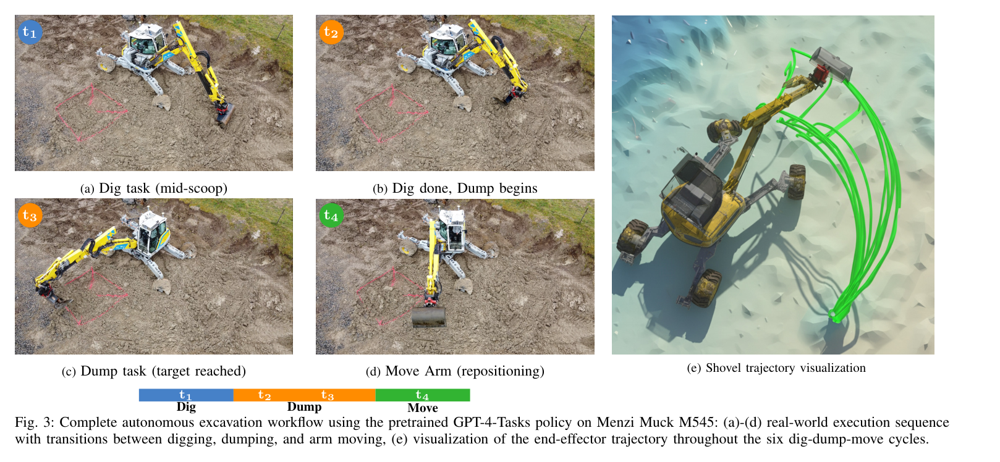
원문 Figure 3 · PDF p.6 — Fig. 3: Complete autonomous excavation workflow using the pretrained GPT-4-Tasks policy on Menzi Muck M545: (a)-(d) real-world execution sequence with transitions between digging, dumping, and arm moving, (e) visualization of the end-effector trajectory throughout the six dig-dump-move cycles.
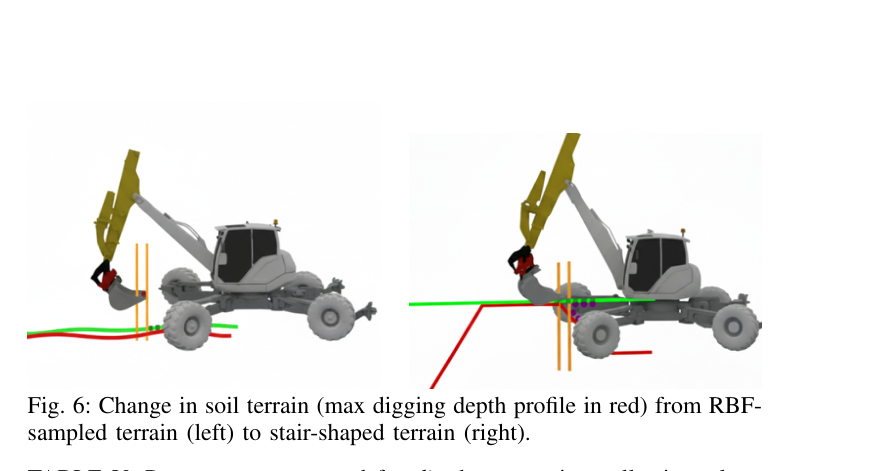
원문 Figure 6 · PDF p.7 — Fig. 6: Change in soil terrain (max digging depth profile in red) from RBF- sampled terrain (left) to stair-shaped terrain (right).
핵심 결과 해석
시뮬레이션 GPT-4-Tasks는 dig 98.8%, abort 99.0%, recovery 99.5% 성공률을 기록했다. Dump 오차는 1.6±0.9 cm에서 perturbation 시 5.5±3.4 cm, move는 0.8±0.4 cm에서 5.3±2.5 cm로 증가했다.
실기 dump/move 오차는 3.6±2.5/2.2±1.0 cm였다. 6회 완전 cycle은 평균 0.96 m³를 36 s에 처리했고 dig/dump 오차는 10.7±3/6.5±2.9 cm였다. 매설 rock stall 뒤 abort/recovery도 작동했다.
새 move task 1,000-shot SFT에서 pretrained 모델은 96%, 4.3±3.0 cm였고 scratch는 12%, 45.7±30.3 cm였다. Scratch full 15만 개는 100%, 2.4±0.9 cm여서 pretraining의 데이터 효율을 확인했다.
RLFT 성공률은 terrain 96.7%, soil 95.1%, bucket 93.4%였다. KL 제거 시 기존 move 오차가 11.7/6.9/7.5 cm로, KL 사용 3.3/2.2/2.6 cm보다 커져 망각 억제 효과가 확인됐다.
정량 결과
평가 항목
정량 결과
조건·맥락
원문 근거
GPT 다중작업 성공률
dig 98.8%, abort 99.0%, recovery 99.5%
시뮬레이션 기본 조건
PDF p.6
실기 정밀 오차
dump 3.6±2.5 cm, move 2.2±1.0 cm
M545 zero-shot 배치
PDF p.6
완전자율 cycle 생산성
0.96 m³, 36 s
6 cycle 평균 bucket volume과 cycle time
PDF p.5
실기 dig·dump 오차
10.7±3 cm, 6.5±2.9 cm
3개 dig point와 90° dump cycle
PDF p.5
1,000-shot SFT
96%, 4.3±3.0 cm
pretrained 모델의 새 move-arm task
PDF p.7
1,000-shot scratch
12%, 45.7±30.3 cm
동일 move-arm demonstration budget
PDF p.7
OOD RLFT 성공률
terrain 96.7%, soil 95.1%, bucket 93.4%
각 60만 interaction fine-tuning
PDF p.7
KL 제거 시 기존 move 오차
11.7 / 6.9 / 7.5 cm
terrain / soil / bucket; KL 사용은 3.3 / 2.2 / 2.6 cm
PDF p.8
실패 사례와 경계조건
최대 0.75 s 지연과 속도 noise에서 dump와 move 오차가 각각 5 cm 이상으로 증가한다.
Scratch 모델은 1,000개 시연만으로 새 move task를 거의 배우지 못해 pretraining 의존성이 크다.
KL regularization을 제거한 RLFT는 새 OOD에는 적응해도 기존 정밀 move skill을 크게 잊는다.
실기 obstacle recovery는 proprioceptive stall 기반이므로 장애물 위치·형상을 인식하거나 사전 우회하지는 못한다.
5.한계 및 향후 연구
현재 한계
task 전환은 학습 정책 밖 finite-state machine과 수동 설계 조건에 의존해 완전한 end-to-end 의사결정은 아니다.
관측은 주로 proprioception과 제한된 지형 표현이며 LiDAR·vision 기반 객체·토양 인식이 통합되지 않았다.
실기 평가는 6 cycle과 한 장비에 집중되어 장기 운전, 다양한 현장·부착물의 통계적 일반화는 확인되지 않았다.
시뮬레이션 토양과 충돌 모델의 단순화 때문에 RLFT OOD 성공률이 실제 다양한 지반을 대표한다고 단정할 수 없다.
향후 연구
더 큰 Transformer와 더 많은 task·장비 데이터를 사전학습해 범용 excavation foundation policy로 확장한다.
LiDAR와 vision을 공통 token으로 통합해 장애물 위치, 토양 상태, bucket fill을 직접 인식한다.
Material Point Method 등 고충실도 토양 시뮬레이션으로 soil dynamics와 sim-to-real 범위를 넓힌다.
FSM 의존성을 줄이면서도 safety invariant를 유지하는 학습 기반 task planning과 전환 정책을 연구한다.
6.한마디로 정리
핵심 방법은?
RL·script·사람 시연을 task token 기반 GPT에 behavior-cloning하고, 소량 SFT와 KL-정규화 RLFT로 새 skill·조건에 적응한다.
핵심 결과는?
12 t M545에서 0.96 m³ 평균 적재량, 36초 cycle과 장애물 복구를 포함한 6회 완전자율 workflow를 실행했다.
한계는?
실기 표본이 작고 FSM·제한된 perception·단순 토양 시뮬레이션에 의존해 현장 범용성은 추가 검증이 필요하다.
#학습·RL·IL·VLA#시스템통합·현장실증#Transformer 사전학습#다중 전문가 시연#SFT#RLFT
나의 의견 / 우리 연구와의 연관성
ExT는 개별 논문의 digging policy, grading controller, boulder recovery를 공통 skill vocabulary로 묶을 수 있는 상위 정책 틀이다. 특히 데이터 생성 방법을 통일하지 않고 task 특성에 맞게 고른 뒤 interface만 통일한다는 점이 실제 연구 자산 통합에 유용하다.
저수준에는 hydraulic-aware MPC나 온라인 model-based tracking을 두고 ExT가 reference와 task mode를 생성하는 계층 구조가 현실적이다. Holistic Fusion의 전역·지역 상태와 센서리스 힘 추정을 token에 추가하면 이동, 접촉, 적재량을 아우르는 작업 전환 근거가 강화된다.
Boulder excavation의 rock 접근·회수 정책을 새 task token과 demonstration으로 추가해 obstacle-specific skill로 확장할 수 있다.
고정밀 grading MPC를 deterministic expert로 사용해 ExT에 grading trajectory를 distill할 수 있다.
압력 기반 외력·페이로드 추정을 observation에 넣으면 stall, bucket fill, soil resistance에 따른 전환을 개선할 수 있다.
점프 없는 odometry와 LiDAR token을 결합하면 굴착기 base 이동과 작업영역 재배치를 동일 sequence model에서 다룰 수 있다.
7.전체 그림·표
본문 핵심 위치에 배치하지 않은 원문 Figure와 Table을 원문 페이지 순서로 수록한다.
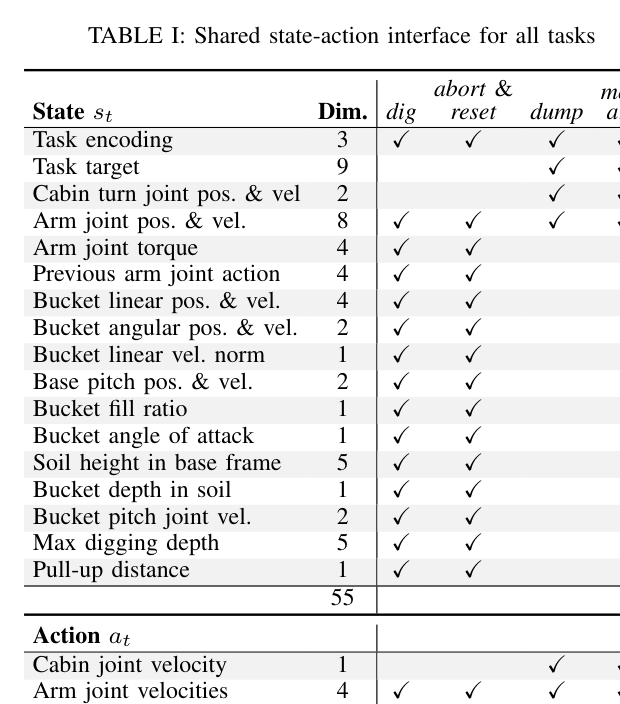
원문 Table I · PDF p.3 — TABLE I: Shared state-action interface for all tasks
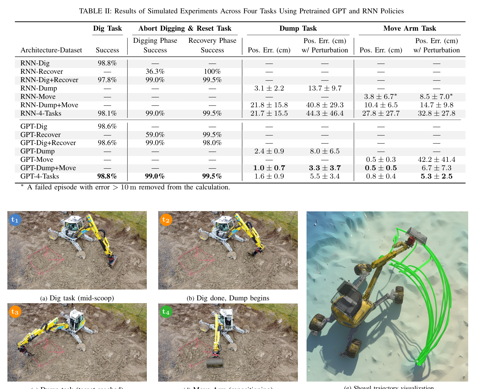
원문 Table II · PDF p.6 — TABLE II: Results of Simulated Experiments Across Four Tasks Using Pretrained GPT and RNN Policies
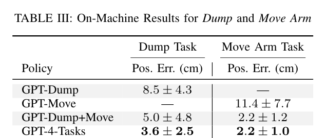
원문 Table III · PDF p.6 — TABLE III: On-Machine Results for Dump and Move Arm
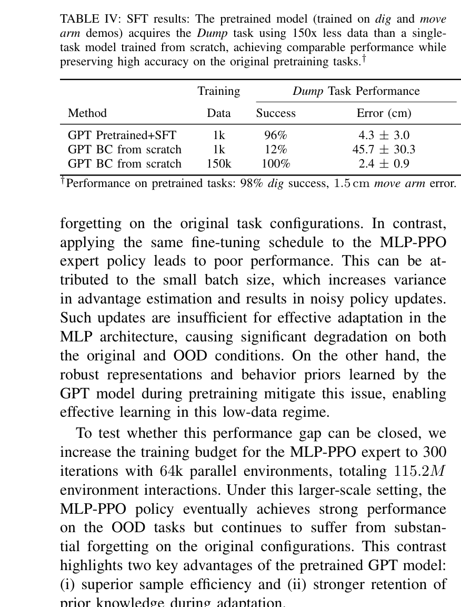
원문 Table IV · PDF p.7 — TABLE IV: SFT results: The pretrained model (trained on dig and move arm demos) acquires the Dump task using 150x less data than a single- task model trained from scratch, achieving comparable performance while preserving high accuracy on the original pretraining tasks.†
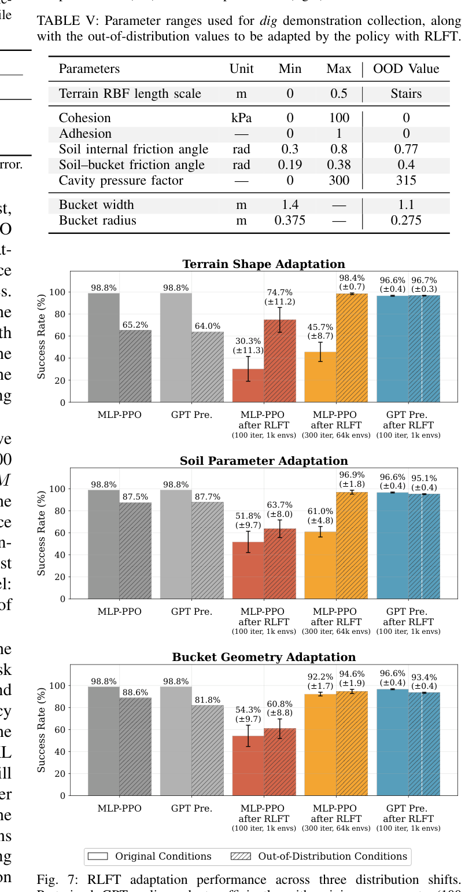
원문 Table V · PDF p.7 — TABLE V: Parameter ranges used for dig demonstration collection, along with the out-of-distribution values to be adapted by the policy with RLFT.
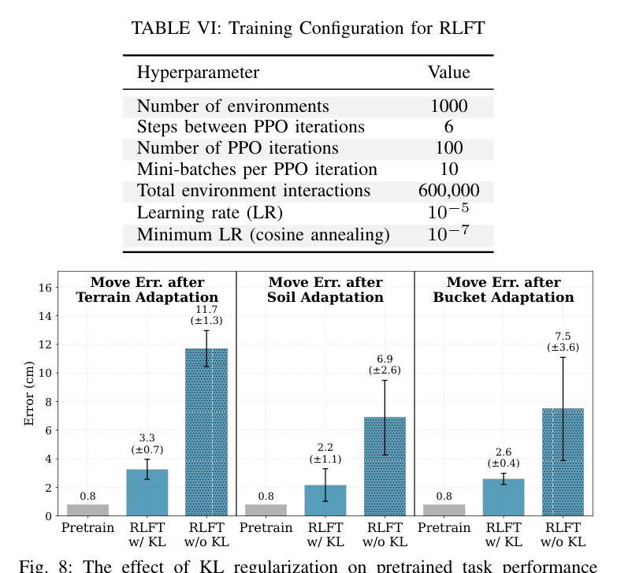
원문 Table VI · PDF p.8 — TABLE VI: Training Configuration for RLFT